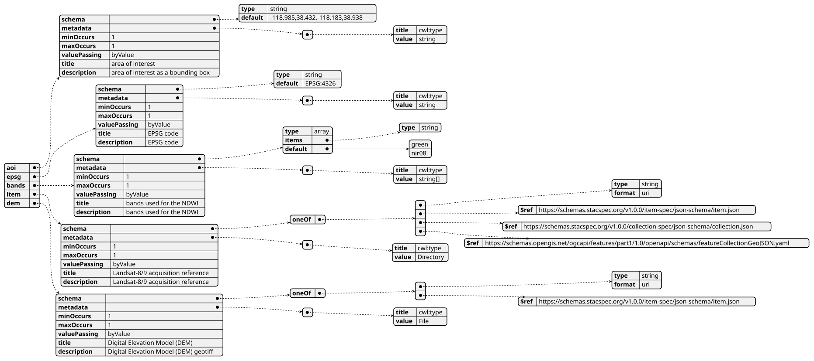
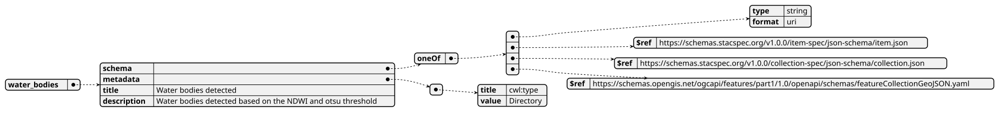
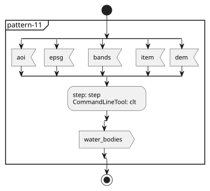
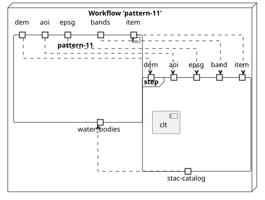
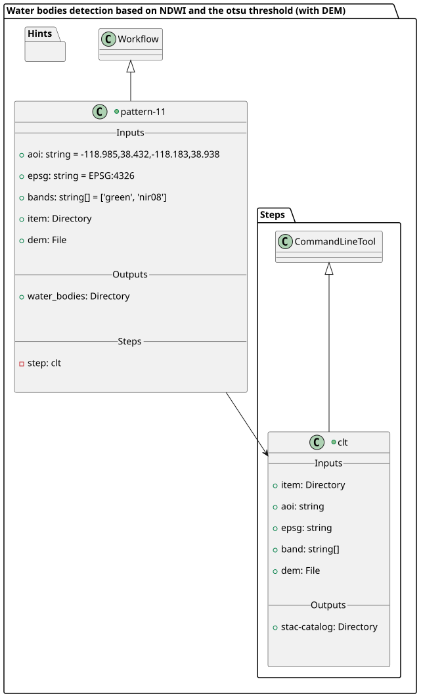
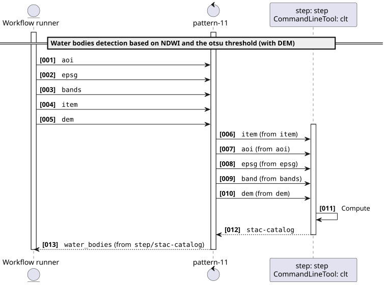
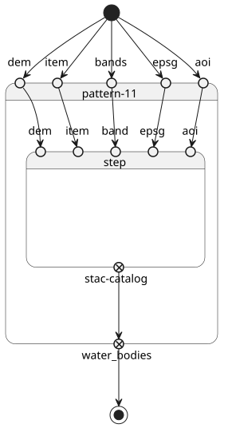

Pattern 11 - Water bodies detection based on NDWI and the otsu threshold (with DEM) v1.0.0
This pattern uses as input a File and a Directory
This software is licensed under the terms of the Apache License 2.0 license - SPDX short identifier: Apache-2.0
2025-01-01 - 2026-08-28T13:27:44.052 Copyright Make Earth Observation Great Again - > https://ror.org/9999cx000
Project Team
Authors
| Name | Organization | Role | Identifier | |
|---|---|---|---|---|
| Lane, Lois | lois.lane@meoga.com | Make Earth Observation Great Again | Project administration | https://orcid.org/0000-9999-0000-9999 |
| Kent, Clark | clark.kent@meoga.com | Make Earth Observation Great Again | Supervision | https://orcid.org/9999-0000-9999-0000 |
Contributors
| Name | Organization | Role | Identifier | |
|---|---|---|---|---|
| Luthor, Lex | lex.luthor@meoga.com | Make Earth Observation Great Again | Software | None |
User Manual
User Manual can be found on https://eoap.github.io/application-package-patterns/pattern-1/.
Runtime environment
Supported Operating Systems
- Linux
- macOS
- macOS Server
Requirements
pattern-11
CWL Class
Inputs
| Id | Type | Label | Doc |
|---|---|---|---|
aoi |
string | area of interest | area of interest as a bounding box |
epsg |
string | EPSG code | EPSG code |
bands |
array of string |
bands used for the NDWI | bands used for the NDWI |
item |
Directory | Landsat-8/9 acquisition reference | Landsat-8/9 acquisition reference |
dem |
File | Digital Elevation Model (DEM) | Digital Elevation Model (DEM) geotiff |
Steps
| Id | Runs | Label | Doc |
|---|---|---|---|
| step | #clt |
Detect water bodies | Detect water bodies based on the NDWI and otsu threshold from Landsat-8/9 acquisition and DEM |
Outputs
| Id | Type | Label | Doc |
|---|---|---|---|
water_bodies |
Directory | Water bodies detected | Water bodies detected based on the NDWI and otsu threshold |
OGC API - Processes
When pattern-11 Workflow is exposed through OGC API - Processes - Part 1: Core, inputs and outputs fields below represent the interface of the getProcessDescription API.
Inputs

Outputs

UML Diagrams
Activity diagram
Learn more about the Activity diagram below.

Component diagram
Learn more about the Component diagram below.

Class diagram
Learn more about the Class diagram below.

Sequence diagram
Learn more about the Sequence diagram below.

State diagram
Learn more about the State diagram below.

Run in step
step
clt
CWL Class
Inputs
| Id | Option | Type |
|---|---|---|
item |
--input-item |
Directory |
aoi |
--aoi |
string |
epsg |
--epsg |
string |
band |
--band |
One of:
|
dem |
--dem |
File |
Execution usage example:
runner pattern-11 \
--input-item <ITEM> \
--aoi <AOI> \
--epsg <EPSG> \
--band <BAND> \
--dem <DEM>